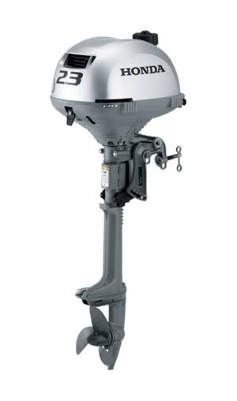

kenya marine services founded in 2010 where the business is anchored on deep commited to precision,safety and reliability on the open waters.As a premier provider of managing solutions, logistics and vessel support services we seamlesly bridge the gap between complex marine challanges and efficient operational success. • Eco-Friendly Innovations: Stricter environmental regulations led to the phasing out of toxic anti-fouling paints (like tributyltin) in favor of low-VOC, biocide-free, and nano-coatings.
• Digital Integration: Traditional ship chandleries and modern marine distributors now rely on global supply chain networks, automated logistics, and e-commerce platforms to serve both commercial shipping fleets and recreational mariners. Domestic Shipbuilding: Kenya Shipyards Limited was established by executive order to lead local shipbuilding and maintenance, marked by landmark domestic construction projects like the MV Huru built in Kisumu.

Kenya Marine Center was established in 2006 by Jochen Federschmied whose country of origin is Germany alongside his wife Grace Federschmied a Kenyan. Together they built a company focused on quality supply of healthy live fish. To date it is this principle that has enabled us to grow and maintain our client list who identify with our ability to provide quality livestock in all shipments to the world. Kenya Marine Center began small with just a couple of staff. Over a period of 15+ years we have managed to establish a worldwide known company with an ever growing reputation of delivering quality ornamental marine fish. Looking back into the year 2006 when it all began, we had a setting of only 36 Aquariums in a rented go down, compared to the 180,000 L tank capacity we now run in a 8,000sq/m ground. Early Indian Ocean Trade: Chinese armadas, Ottoman Turkish fleets, and Arab dhows frequented ancient East African ports like Lamu, Malindi, and Mombasa to trade goods and service vessels.